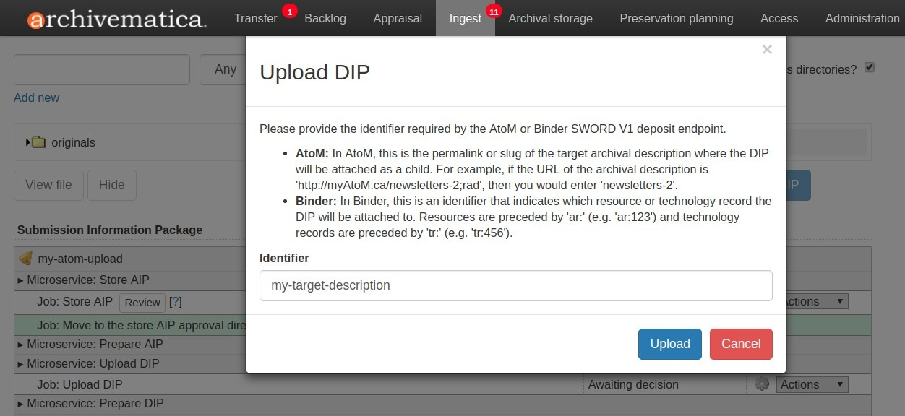
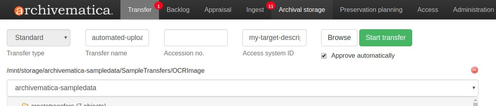
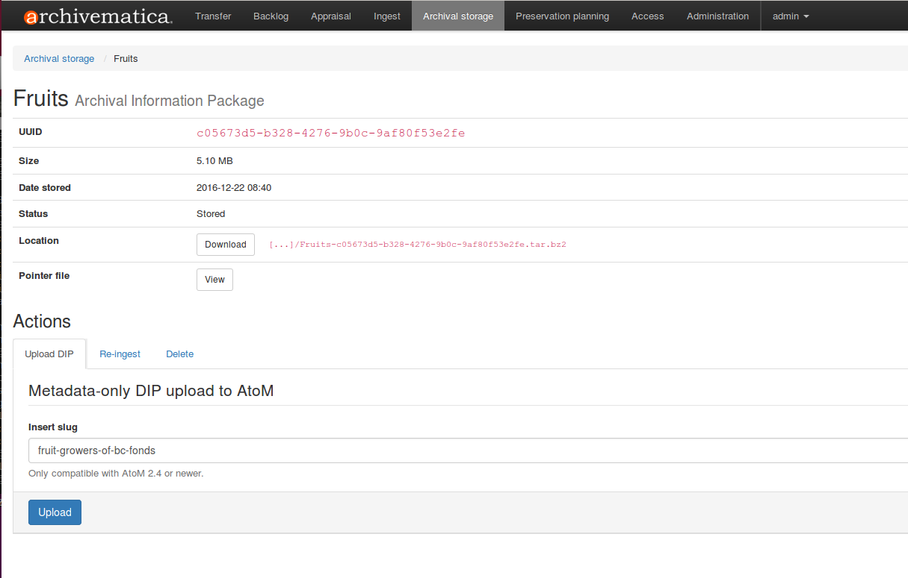
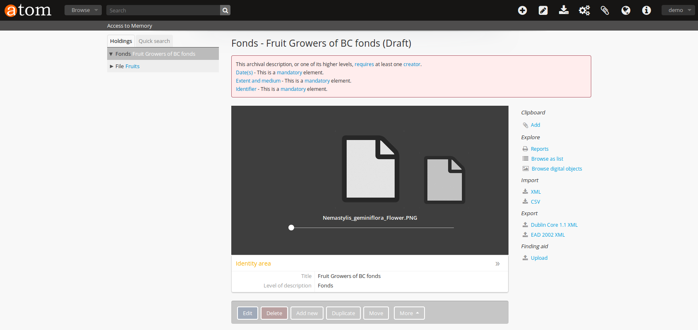
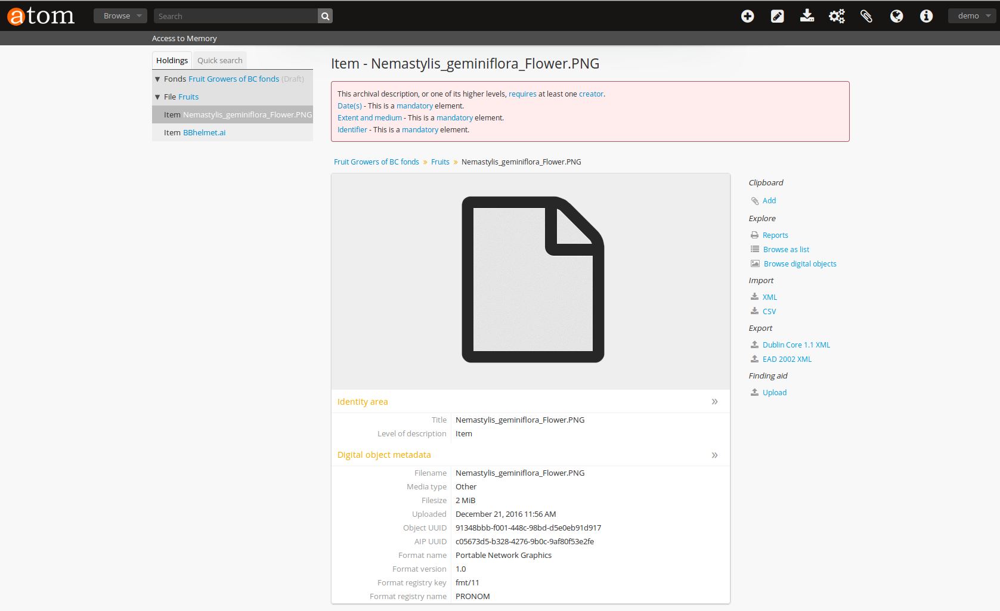
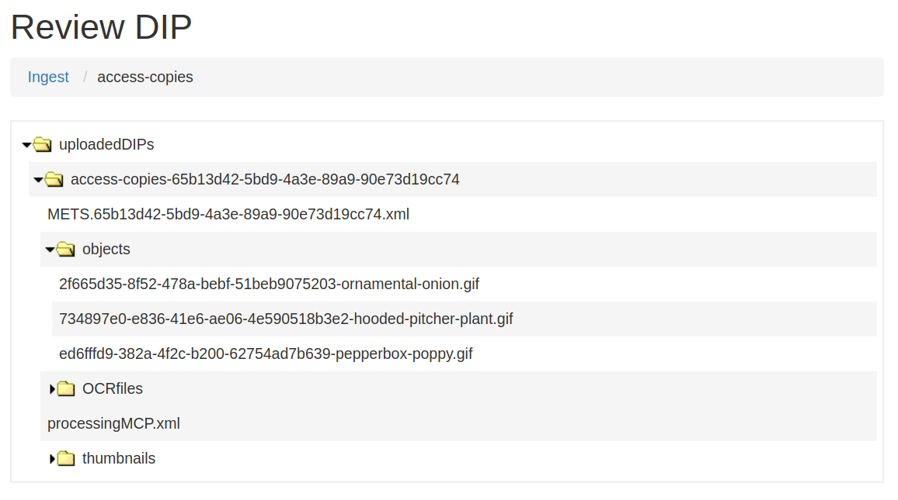

アクセス¶
インジェストの際、Archivematicaは、デジタルオブジェクトのアクセスコピーを生成し、DIP（Dissemination Information Package）にパッケージ化できます。DIPは、アクセスシステムにアップロードしたり、将来の使用のために保存したりできます。一般的なルールとして、保管スペースを節約するために、必要なときだけDIPを作成することをお勧めします。 AIP を後日再インジェストすることで、オンデマンドでDIPを作成できます。
DIPがアップロードおよび/または保存されると、uploadedDIPsディレクトリに移動します。このデータが不要になった場合、uploadedDIPsディレクトリを消去できます。詳細については、 処理ストレージ使用状況 を参照してください。
Archivematica's Access tab displays DIPs that have been uploaded to AtoM. It does not display DIPs that have been sent to other access systems, like ArchivesSpace.
このページでは：
アクセスシステム¶
正規化マイクロサービスで Normalize for preservation and access または Normalize for access のいずれかを選択して普及情報パッケージ（DIP）を作成した場合、アーカイブ素材へのアクセスを提供する方法として、コンテンツ管理ツールにアップロードできます。Archivematicaの正規化オプションの詳細については、 正規化 を参照してください。
DIPには、Archivematicaの正規化ルールまたは手動正規化プロセスによって作成された、転送元のデジタルオブジェクトのアクセスコピーが含まれます。DIPには、DIP METSファイルと、オプションで各デジタルオブジェクトのサムネイルも含まれます。
A content management tool called AtoM is Archivematica's default access system. AtoM is a web-based, open source application for standards-based archival description and access in a multilingual, multi-repository environment. Access integration workflows also exist for ArchivesSpace and CONTENTdm.
AtoMにDIPをアップロード¶
DIPをAtoMにアップロードするには、まずAtoMインスタンスが動作している必要があります。管理者は、AtoMインスタンスをArchivematicaと通信できるように設定する必要があります。AtoMとの統合の設定については、 Using AtoM 2.x with Archivematica を参照してください。
重要
DIPをアップロードする前に、AtoM でターゲット記述を作成する必要があります。DIPのアップロード中にDIPを適切な場所に送信するため、説明のURLの一部またはターゲットコレクションを指定する必要があります。
AtoMにアップロードされたデジタルオブジェクトは、ターゲット記述の子として追加され、デフォルトでは、 item の記述レベルが与えられます。他の記述レベルを割り当てるには、転送をバックログに送信し、 鑑定タブでAtoM記述レベル を追加します。
「鑑定」タブの配列機能 を使用して、AtoMが認識できる階層を作成し、転送を配列することが可能です。
また、 メタデータフォームまたはメタデータCSVファイルのいずれかを使用して、説明メタデータ を転送に追加できます。この説明メタデータは、AtoMに渡されます。AtoM DIPアップロード統合は、ダブリンコアの説明メタデータのみをサポートしていることに注意してください。以下のDublin Coreフィールドは、AtoMのISAD（G）テンプレートにマッピングされています：
Dublin Core |
ISAD（G） |
|---|---|
タイトル |
タイトル |
識別子 |
識別子 |
作成者 |
作成者名 |
日付 |
作成日 |
タイプ |
サブジェクトアクセスポイント |
来歴 |
直接の取得または転送元 |
説明 |
範囲と内容 |
範囲 |
範囲と媒体 |
フォーマット |
範囲と媒体 |
ソース |
オリジナルの所在 |
言語 |
素材の言語 |
権利 |
アクセスを管理する条件 |
カバレッジ |
アクセスポイントを設置 |
件名 |
サブジェクトアクセスポイント |
注釈
Archivematicaのフォームからメタデータを追加すると、AtoMに中間ディスクリプションが作成されます。ただし、転送がバックログに送信され、AtoM記述が適用された場合（ AtoMの記述レベルを追加 を参照）、フォームを通して追加されたメタデータは、AtoMに存在しません。また、中間記述も存在しませんが、適用した記述レベルは、AtoMに存在します。
ターゲットの説明をArchivematicaに提供する方法は2つあります。1つ目は、DIPアップロードでマイクロサービス中にスラッグを提供する方法です。
Process your transfer. You must select
Normalize for preservation and accessorNormalize for accessat the Normalization microservice. When you reach the Upload DIP microservice, select "Upload DIP to AtoM" from the drop-down menu.ダイアログボックスが表示されます。ダイアログボックスに説明のパーマリンクを入力します。例えば、アーカイブの説明のURLがhttp://myAtoM.ca/my-target-descriptionの場合、
my-target-descriptionと入力します。詳しくは、 AtoM用語集 のslugを参照してください。
{kind=link}

青い"アップロード"ボタンをクリックします。デジタルオブジェクトは、ターゲット記述内の子項目としてアップロードされます。
DIPのアップロードが完了したら、ダッシュボードの「アクセス」タブを開きます。このタブには、AIPとアップロードされたDIPが表示されます。既知の問題のため、提供されたリンクを使用してアップロードされたDIPに移動する場合は、手動でURLを編集して、
/sword/depositを削除する必要があります。AtoMのターゲット記述を確認してください。デジタルオブジェクトは、レコードの子オブジェクトとして表示されるはずです。
より自動化された環境では、転送を設定する際に、 Access system ID ボックスにスラッグを追加できます。Upload DIPマイクロサービスに到達すると、Archivematicaは、自動的にこの値を取得します。
新しい転送を作成します。
Access system IDボックスに、ダイアログボックスの説明のパーマリンクを入力します。例えば、アーカイブ記述のURLがhttp://myAtoM.ca/my-target-descriptionの場合、my-target-descriptionと入力します。詳しくは AtoM用語集 のslugを参照してください。
{kind=link}

Process your transfer. You must select
Normalize for preservation and accessorNormalize for accessat the Normalization microservice. When you reach the Upload DIP microservice, select "Upload DIP to AtoM" from the drop-down menu (or set this as the preconfigured choice in the processing configuration).AtoMのターゲット記述を確認してください。デジタルオブジェクトは、レコードの子オブジェクトとして表示されるはずです。
AtoMへのメタデータのみのアップロード¶
Archivematica 1.6以降では、ファイルのアクセスコピーをアップロードすることなく、AIPオブジェクトのメタデータをAtoMに送信できます。これは、発見可能にしたいが、著作権やプライバシーの理由でオンラインに表示できないデジタルオブジェクトがある場合に便利なワークフローです。
重要
このワークフローを使用するには、AtoM 2.4以上が必要です。
注釈
以下のAtoM-Archivematicaワークフローは、現在このワークフローではサポートされていません：
説明メタデータ：説明メタデータがCSVまたはユーザーインターフェイスへの入力によって含まれている場合、メタデータは、このワークフローのAtoMには表示されません。
arranging for AtoM ワークフローを使用して、記述レベルが割り当てられたSIP - このワークフローでは、記述レベルは無視されます。
Archival Storageに移動し、AIPを検索または閲覧します。AIPの名前をクリックするか、"View"します。
"Actionsの下、"Upload DIPタブにアップロードしたいAtoMの説明のスラッグを入力します。
{kind=link}

アップロードに成功すると、AtoMは、AIPのファイルレベルの記述と各オブジェクトのアイテムレベルの記述を作成します。
{kind=link}

各アイテムには、それに関連付けられた一般的なサムネイルと、オリジナルのオブジェクトに関するデジタルオブジェクトメタデータがあり、ファイル名、ファイルサイズ、アップロード日、オブジェクトおよびAIP UUID、フォーマット名、フォーマットのバージョン、フォーマットのレジストリおよびキーが含まれます。
{kind=link}

ArchivesSpaceにDIPをアップロード¶
ArchivesSpaceインスタンスにDIPをアップロードするには、[管理]タブでArchivesSpaceの情報と資格情報を入力する必要があります。詳細については、 ArchivesSpaceダッシュボードの設定 を参照してください。
通常通り、 Transfer 手順を使ってSIPを作成します。[正規化]で、アクセス用にパッケージを正規化するオプションのいずれかを選択します。DIPのアップロード]マイクロサービスで、[アーカイブスペースにDIPをアップロード]を選択します。[Match］ページが自動的に開きます。
DIP をアップロードするArchivesSpaceコレクションを見つけます。リソース名をクリックすると、コレクションをドリルダウンして、より低いレベルの記述でDIPをアップロードできます。
DIPを保存する記述のレベルに移動したら、 Assign DIP objects to this resource を選択します。
Assign Objects画面で、どのオブジェクトをどのリソースに割り当てるかを選択します。右上のフィルターボックスを使うと、特定のオブジェクトやリソースを名前で検索できます。
オブジェクトとペアにしたいリソースを選択したら、右上の「 Pair 」をクリックします。必要に応じてステップ2～4を繰り返します。
オブジェクトとリソースのペアリングが終わったら、 Review matches をクリックします。
すべてのペアを削除して再起動するには、 Restart matching をクリックします。
すべてが正しければ、 Finish matching をクリックします。
これでインジェストタブに戻り、AIPのインジェストを終了できます。
あるいは、マッチを手動で作成し、転送のメタデータフォルダに、 archivesspaceids.csv というファイル名で置くこともできます。たとえば、次のような転送ツリー::があるとします
pictures
├── extra
│ └── oakland03.jp2
├── Landing zone.jpg
├── MARBLES.TGA
└── metadata
└── archivesspaceids.csv
CSVファイルには2つのカラムが必要です。1つは転送ディレクトリ内のオリジナルファイルへの相対パス、もう1つはArchivesSpace Archival Objectの Ref ID です。Ref IDは、Archival Objectビューページの"Basic information"セクションから取得できます。例:
"Landing zone.jpg",49807e9587de87dbafb459b34bd20b78
MARBLES.TGA,468050a6add84d6d89d47a975ce5440f
extra/oakland03.jp2,40caf1e2dd47675a92e25011c190fed5
作業処理設定で、 Upload DIP to ArchivesSpace オプションが選択されている場合、CSVファイルは、アップロードのマッチ作成に使用されます。そうでない場合は、インジェストタブで、 Upload DIP to ArchivesSpace を選択すると、Matchページに移動します。新しいマッチを作成する代わりに、CSVファイルから作成されたマッチを確認するには、 Review matches を直接クリックして、マッチングを確定または再開します。
DIPの保管¶
Archivematicaでは、 Storage Service で設定した場所にDIPを保管するオプションも提供しています。これは、ローカルサーバー、NFSマウント、またはDuraCloudなどの他のストレージプロトコルに設定できます。
DIPの保管：
Storage Service で、少なくとも1つのDIP保存場所が構成されていることを確認します。
[Archival保存]タブの[DIPアップロード]マイクロサービスの[DIP保存]ジョブで、[DIP保存]を選択します。
DIP保管のロケーションで、設定されたオプションからDIPの保存場所を選択します。
DIPのレビューとダウンロード¶
保存されているすべてのDIPは、Storage Serviceのパッケージタブ からダウンロードできます。これは、DIPをダウンロードするためのデフォルトの方法です。
If you have used the Upload DIP functionality to send your DIP to AtoM, ArchivesSpace, or CONTENTdm, you will have the option to review the DIP from the Archivematica user interface. When the Upload DIP microservice is complete, a "review" link will appear:

これにより、 uploadedDIPs ディレクトリが新しいタブで開きます。黄色のフォルダアイコンをクリックしてディレクトリを移動できます。個々のDIPオブジェクト、サムネイル、またはMETSファイルをクリックして表示します。
{kind=link}

ファイルの種類とサイズによっては、別のタブで開くか、コンピューターにダウンロードされます。
アクセスタブ¶
By clicking the Access tab in the Dashboard, you can see a table showing all DIPs upload to AtoM including the URL, the associated AIP, the upload date and status, and the option to delete from the Access tab. Note that this link will delete the record of the DIP in the Access tab, not the actual DIP.
現時点では、[アクセス] タブには、AtoMにアップロードされた DIPへのリンクのみが提供され、他のアクセスシステムや保存されているDIPへのリンクは提供されません。